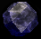
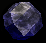
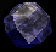
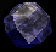

 


About the Game
Drakan: Order of the Flame is an action-adventure video game developed by Surreal Software and published by Psygnosis in 1999. The game follows Rynn, a young woman with extraordinary martial skills, and an ancient dragon Arokh on their quest to free Rynn's younger brother from the evil sorcerer Navaros. The gameplay alternates between dungeon exploration and hack and slash when Rynn is alone and aerial dogfights when she mounts Arokh. A sequel, Drakan: The Ancients' Gates, was released in 2002.
Gameplay
The gameplay of Drakan primarily consists of exploring vast locations and battling enemies. The player navigates Rynn from third-person perspective, using the keyboard and mouse. On open-air locations, Arokh follows Rynn either by flying or by walking if he can land nearby. In the latter case, he also allows Rynn to mount him at any time, whereupon the control switches to him. When navigating Arokh, the player cannot use any of Rynn's items except potions, but has a variety of ranged weapons the dragon acquires throughout the game, starting with his innate fire breathing. When in the air, Rynn and Arokh are superior to any non-aerial enemy, but to defeat flying monsters, the player must maneuver and aim precisely. Dismounting is only possible when landed. The large open-air locations contain entrances to smaller dungeons, which Arokh usually cannot enter because of his size, so Rynn has to explore them alone. When controlling Rynn, the player can equip her with swords, daggers, maces, battle axes, bows, and armour that she picks up throughout the game. The inventory is limited in size, and most weapons wear down when used and cannot be repaired. In addition to normal weapons, there are magical ones, as well as potions, bow arrows, and quest-related items. No special in-game skills are required for Rynn to equip any weapon or armour she picks up, and the player can use acrobatics to gain tactical advantage in combat. The game was rated "Mature" by the Entertainment Software Rating Board for "animated violence, blood, and gore" because of its realistic depiction of dismemberment, decapitation, and gibbing of the enemies. When not in combat, the player has to solve puzzles to progress the story or complete side-quests to obtain special artifacts like unique armour and weapons.